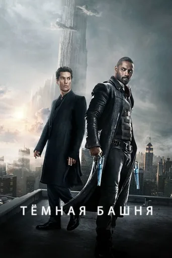

Тёмная башня 2017
Наш мир – не единственный из существующих. Заклятые враги Роланд Дискейн, последний из ордена стрелков, и Уолтер О’Дим, известный также как Человек в черном, ведут извечную борьбу. На кону – мифическая Темная Башня, последний оплот и надежда вселенной, без которой мир будет повержен в полный хаос и разрушение. Силам добра и зла суждено столкнуться в последней схватке, ведь Роланд Дискейн – единственный, кому под силу остановить Человека в черном, прежде чем тот разрушит Темную Башню.
Открыть в каталогеДанные и постеры принадлежат их правообладателям. Этот продукт использует TMDB API, но не одобрен и не сертифицирован TMDB.